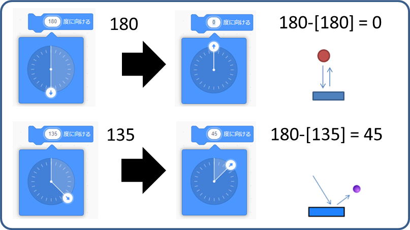

ボールを打ち返す / Scratchヒント
画面のはじっこにあたったら
ボールが画面の端っこに当たったら、跳ね返るプログラムを作ります。

最初の位置は、画面の中央（ X が 0 、y が 0 です）にしました。
最初にどの方向にボールが動くか［(90)度に向ける］でボールの向きを決めます。
次に、ずっと［10歩動かす］でボールを動かして、［もし端に着いたら、跳ね返る］で命令します。

ラケットで打ち返す
ボールがラケットに触れたとき、ボールの向きを180度反転させます。このプログラムは算数の計算が、役に立ちます。

もし、ボールがラケットに当たったら跳ね返そう。ボールのプログラムを改造します。
このヒントでは「ラケット」という名前で四角形のスプライトを作成してあります。
［もし＜ラケットに触れたら＞なら］で、ボールの向きを180度反転しています。

動作確認